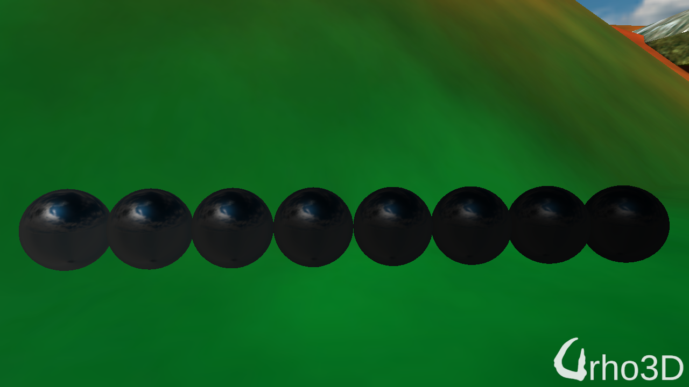
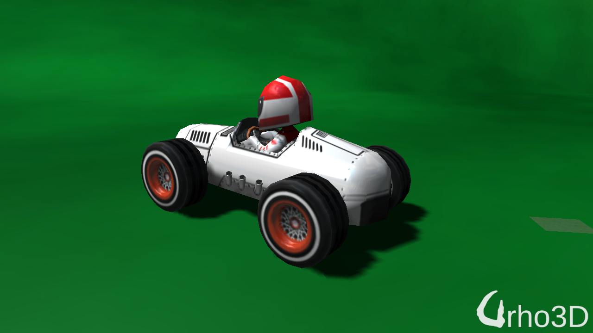
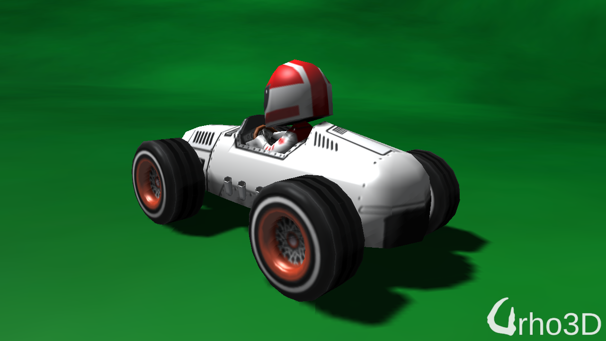

While investigating PBR Mobile, I came across Unreal’s discussion on the topic, https://www.unrealengine.com/en-US/blog/physically-based-shading-on-mobile And investigating further, I found EnvBRDFApprox() fn already exist in our shader.
Applying the
roughness
gradient from 0 to 1:

edit: closer image
Applying it to my model using spec map treated as roughness map:

But
I keep finding topics on how texture fetches are expensive on mobile and tried using a constant reflected value instead of a cube lookup:

This I can live with it!
The vehicle images are shown with baked bump/normal applied.